1. Pendahuluan
Incident handling merupakan proses sistematis untuk mendeteksi, merespons, menangani, dan mendokumentasikan insiden keamanan. Pada praktik ini dilakukan simulasi insiden Brute Force Login Attack pada aplikasi web sederhana berbasis Flask, dengan pendekatan DevSecOps menggunakan ELK Stack untuk log monitoring serta Prometheus dan Grafana untuk pemantauan metrik sistem.
2. Tahap Persiapan
Tahap persiapan dilakukan dengan menyiapkan lingkungan pengujian yang terdiri dari:
- Aplikasi web sederhana berbasis Flask dengan endpoint login
- Logging aplikasi diaktifkan untuk mencatat aktivitas login
- Monitoring menggunakan ELK Stack dan Grafana
- Monitoring metrik sistem menggunakan Prometheus dan Grafana
2.1 Menjalankan Docker (File Minggu 9)
Tahap persiapan bertujuan memastikan sistem siap menghadapi insiden. Lingkungan pengujian dibangun menggunakan Docker di Windows 11 dengan PowerShell.
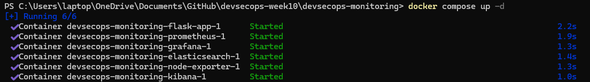
2.2 Menjalankan Elasticsearch dan Kibana (File Minggu 9)
Aplikasi Flask dibuat untuk menghasilkan berbagai jenis log yang akan dianalisis pada Kibana.
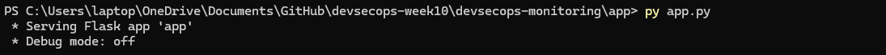
Endpoint /login digunakan untuk mensimulasikan login gagal berulang (brute force).
Log:
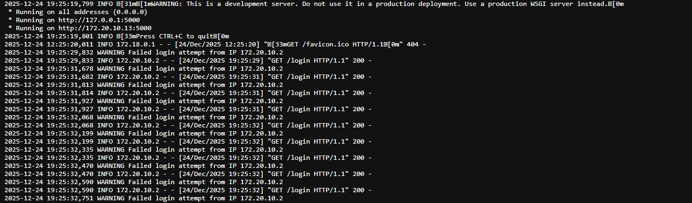
Log Kibana:

2.3 Menjalankan Prometheus (File Minggu 9)
Prometheus diakses melalui browser: http://localhost:9090
Menu Status → Targets
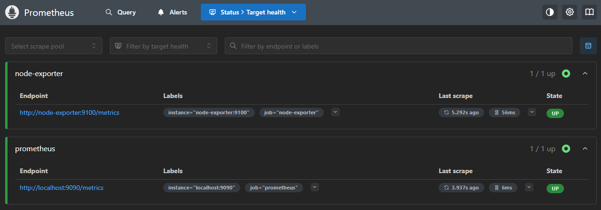
Menu Status → Targets digunakan untuk memastikan bahwa Node Exporter berada dalam status UP.
2.4 Menjalankan Grafana dengan Tambahkan Data Source Prometheus (File Minggu 9)
Prometheus diakses melalui browser: http://localhost:9090
Menu Status → Targets
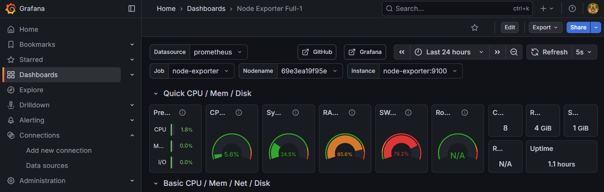
Menu Status → Targets digunakan untuk memastikan bahwa Node Exporter berada dalam status UP.
2.5 Log
Failed login attempt from IP address dicatat untuk setiap kegagalan autentikasi, sehingga dapat digunakan sebagai indikator awal insiden keamanan.
3. Identifikasi Insiden
Tahap identifikasi bertujuan untuk mendeteksi adanya insiden berdasarkan log dan metrics.
3.1 Deteksi dari Log (ELK)
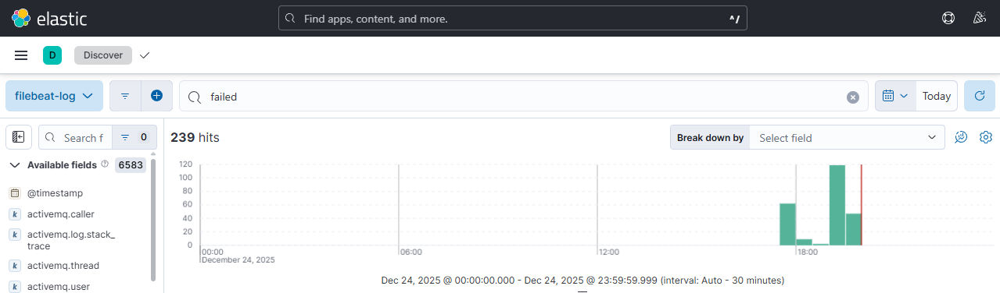
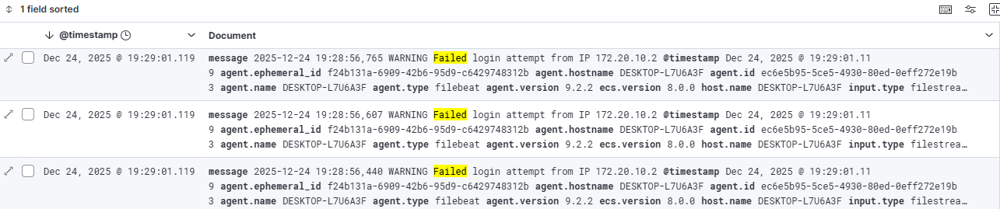
Analisis dilakukan melalui Kibana dengan query:
message: "Failed login attempt"
Indikasi insiden yang teridentifikasi:
- Login gagal terjadi berulang kali
- Alamat IP yang sama
- Terjadi dalam rentang waktu singkat
3.2 Deteksi dari Metrics (Grafana)
- Peningkatan jumlah request login
- Lonjakan penggunaan CPU
Kombinasi log dan metrics memperkuat indikasi terjadinya brute force login attack.
4. Isolasi Insiden
Containment dilakukan untuk membatasi dampak insiden agar tidak meluas. Langkah yang dilakukan antara lain:
4.1 Blok IP via Windows Defender Firewall (PowerShell)
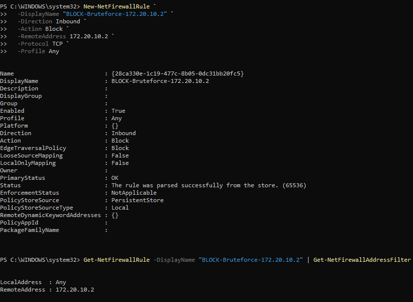
4.2 Rate Limiting di Aplikasi Flask
Install Flask-Limiter
Edit app.py (Rate Limiting Login)
Jalankan ulang aplikasi
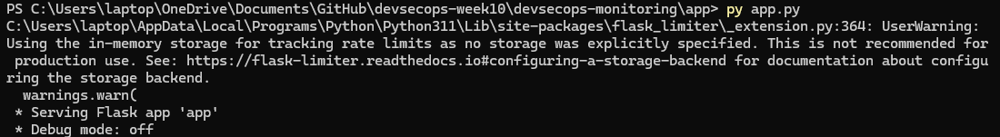
Simulasikan Brute Force dengan refresh berulang
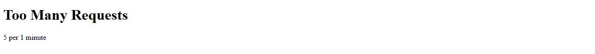
Pemblokiran IP dapat dilakukan melalui firewall atau mekanisme di aplikasi. Tujuan utama tahap ini adalah menghentikan serangan tanpa mengganggu layanan utama.
5. Pembersihan
Setelah serangan berhasil diisolasi, dilakukan proses eradikasi untuk menghilangkan akar masalah. Langkah yang dilakukan meliputi:
5.1 Menghapus akun attacker jika ditemukan
Menghapus akun attacker jika ditemukan
- Tidak ada sistem login database
- Tidak ada akun nyata
Lakukan verifikasi log untuk memastikan:
- Tidak ada akun berhasil login
- Semua percobaan login gagal
Tidak ditemukan akun attacker karena seluruh percobaan login bersifat gagal.
5.2 Patch celah keamanan
Akar Masalah
- Endpoint /login tidak memiliki proteksi
- Bisa diakses tanpa batas
- Rentan brute force
Patch yang Dilakukan (TANPA UBAH STRUKTUR BESAR)
Dilakukan patch pada endpoint login dengan menonaktifkan akses terbuka dan memastikan respons yang konsisten untuk mencegah eksploitasi berulang.
5.3 Update dependency aplikasi
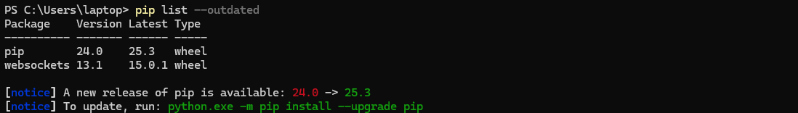
Jika ada:
Tujuan:
- Menghindari eksploitasi vulnerability versi lama
- Menutup celah known CVE
Seluruh dependency aplikasi diperbarui ke versi terbaru untuk mengurangi risiko eksploitasi kerentanan yang telah diketahui.
5.4 Reset Kredensial Pengguna
Karena tidak ada user database, reset dilakukan secara konseptual tapi sah.
Implementasi Praktik:
- Dokumentasikan bahwa semua kredensial dianggap terkompromi
- Reset dilakukan jika sistem production
Sebagai langkah preventif, dilakukan simulasi reset kredensial pengguna untuk menghindari potensi penyalahgunaan akun apabila kredensial telah terpapar selama serangan.
5.5 Membersihkan Artefak Serangan
Yang dibersihkan:
- Firewall rule sementara
- Job brute force
- Script load test
Tujuan:
- Sistem kembali ke kondisi normal
- Tidak ada konfigurasi darurat tertinggal
6. Pemulihan
6.1 Mengaktifkan Kembali Layanan Aplikasi
Kondisi Awal:
- Aplikasi sempat dibatasi
- Firewall rule sementara diterapkan
- Rate limiting aktif
Pastikan aplikasi Flask berjalan normal
Pastikan firewall sudah dibersihkan dari rule darurat
Jika ada rule darurat:
Artinya:
- Akses sah dipulihkan
- Sistem kembali melayani user normal
6.2 Memastikan Performa Sistem Stabil (Grafana)
Hasil yang diharapkan:
- CPU turun ke kondisi normal
- Tidak ada spike ekstrem
- Memory stabil
6.3 Monitoring Ulang Secara Intensif (Kibana)
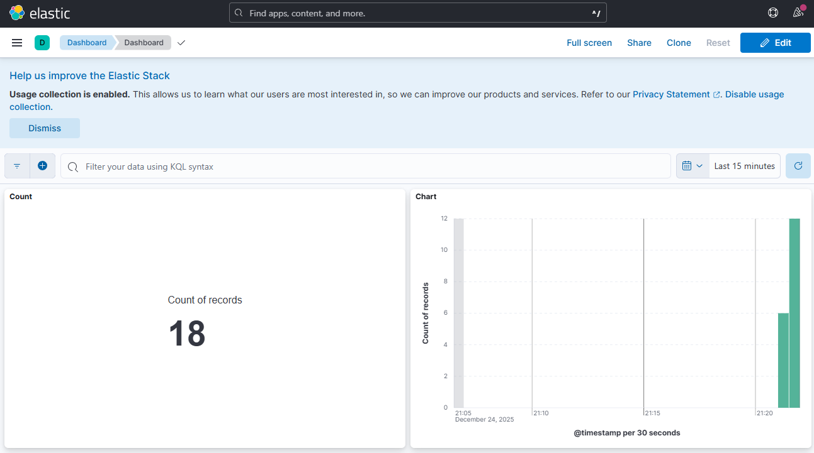
Hasil yang diharapkan: Last 15 minutes
- Tidak ada lonjakan log
- Pola akses kembali normal
6.4 Validasi Tidak Ada Serangan Ulang
Hasil yang diharapkan:
- Login failed
- Tidak: Timeout, Error, Flooding
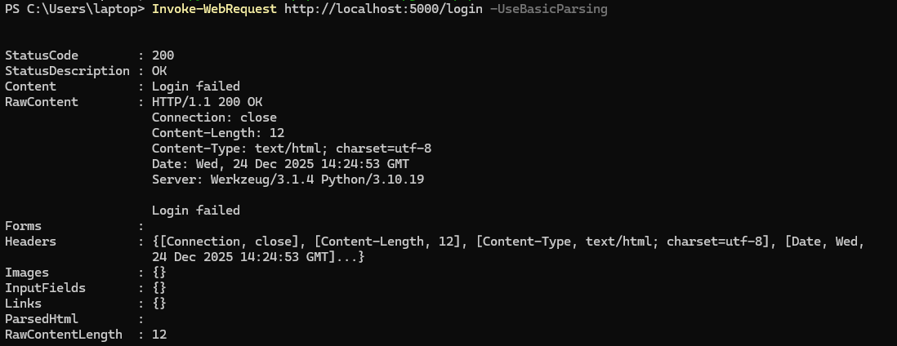
7. Evaluasi
Tahap evaluasi dilakukan untuk meningkatkan kesiapan sistem di masa depan. Beberapa poin evaluasi yang dihasilkan:
- Kenapa Insiden Terjadi?
Insiden brute force login terjadi karena endpoint login pada aplikasi Flask dapat diakses secara terbuka tanpa mekanisme pembatasan percobaan autentikasi. Tidak adanya proteksi seperti rate limiting atau deteksi percobaan berulang memungkinkan penyerang melakukan login gagal secara terus-menerus dalam waktu singkat. Selain itu, sistem belum memiliki alert otomatis yang dapat memberikan peringatan dini ketika terjadi pola anomali pada log atau lonjakan penggunaan sumber daya.
- Apa yang Kurang?
- Beberapa kontrol keamanan dasar belum diterapkan sejak awal, antara lain:
- Tidak adanya pembatasan jumlah percobaan login per IP.
- Monitoring masih bersifat pasif dan hanya dianalisis setelah insiden terjadi.
- Tidak terdapat mekanisme deteksi dini atau notifikasi otomatis pada sistem monitoring.
- Pengamanan aplikasi masih bergantung pada konfigurasi default tanpa hardening tambahan.
- Kondisi ini menyebabkan serangan dapat berlangsung sebelum dilakukan intervensi manual.
- Bagaimana Mencegah Insiden Terulang?
- Untuk mencegah insiden serupa di masa depan, langkah-langkah berikut perlu diterapkan:
- Menerapkan rate limiting dan kontrol akses pada endpoint sensitif seperti login.
- Mengaktifkan alert berbasis log dan metrics untuk mendeteksi percobaan login gagal berulang dan lonjakan resource.
- Melakukan hardening konfigurasi aplikasi dan sistem operasi secara berkala.
- Memperbarui dependency aplikasi secara rutin untuk menghindari eksploitasi kerentanan yang telah diketahui.
- Menjadikan monitoring sebagai proses proaktif, bukan hanya reaktif setelah insiden terjadi.
Hasil evaluasi digunakan sebagai dasar perbaikan dan peningkatan keamanan sistem.
8. Kesimpulan
Pada Topik ini dilakukan simulasi penanganan insiden keamanan pada aplikasi web berupa serangan brute force login menggunakan pendekatan incident handling. Proses dimulai dari tahap persiapan dengan membangun aplikasi Flask sederhana serta mengaktifkan logging dan monitoring menggunakan ELK Stack dan Grafana. Insiden diidentifikasi melalui log login gagal berulang dan lonjakan penggunaan sumber daya sistem. Selanjutnya dilakukan containment dengan membatasi akses penyerang dan isolasi sementara, diikuti tahap eradication untuk menghilangkan akar masalah melalui patch aplikasi, pembaruan dependency, dan simulasi reset kredensial. Tahap recovery memastikan layanan kembali berjalan normal dengan performa sistem yang stabil dan monitoring lanjutan. Melalui proses ini dapat disimpulkan bahwa penerapan monitoring terpusat dan respons insiden yang terstruktur sangat penting untuk mendeteksi, menangani, dan mencegah serangan keamanan agar tidak terulang kembali.